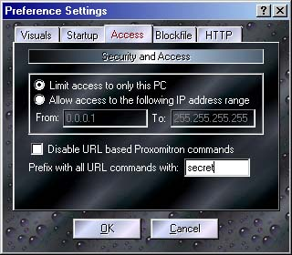

Here is where several of the Proxomitron's global settings can be changed. Click a tab and area for an explanation of its function.

The "Access" Tab
This allows you to allow PCs other than your own to access Proxomitron. Just specify a starting and ending IP address rage to allow in.
BEWARE This is dangerous! Allow access only if you have a good reason too (and preferably a good firewall to boot). In most cases it's better to just run multiple copies of Proxomitron on each PC.
If you do, you may want to disable URL commands so remote users can't cause trouble. Keep in mind URL commands you can load files remotely or change the current config - make sure they're only available to PCs you control. At the very least be sure to create a custom Prefix to use before all URL commands. This can act as a simple password since no URL command will work unless it's preceded with the prefix you choose.
 Return to main index
Return to main index